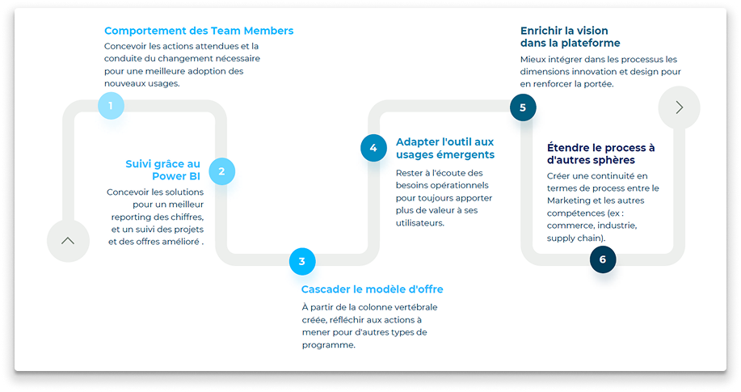
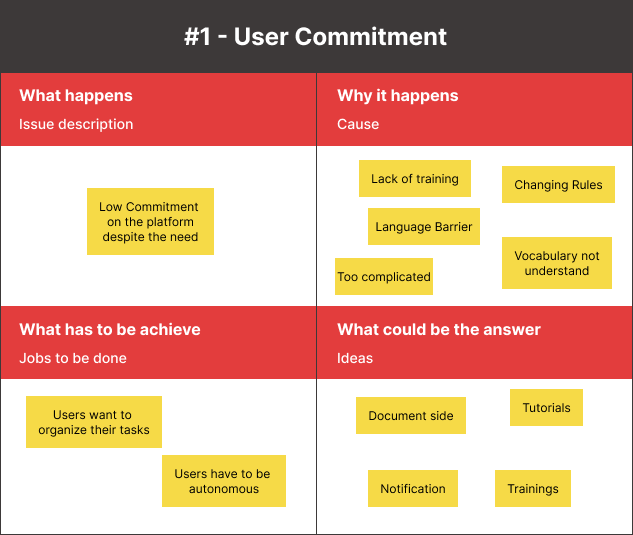
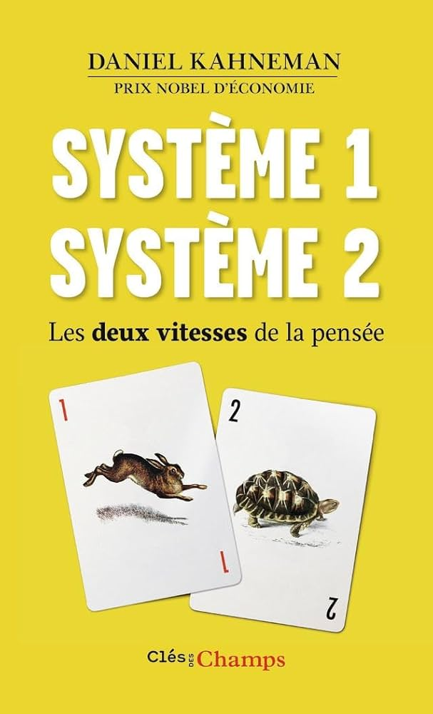

Et si le plus grand désaccord était celui que personne n'a jamais pu avoir ?
Nexans, leader mondial de l'industrie du câble, déploie la plateforme de SHIFT Prime, pour piloter ses campagnes marketing à l'échelle mondiale. Construite sur Microsoft Project Accelerator, elle est en place sur le papier. Dans les faits, l'adoption ne décolle pas et les niveaux de l'organisation ne s'alignent pas. Product design strategist, je conduis la discovery pour comprendre pourquoi elle ne prend pas, et cadrer ce qui doit changer.
On m'a demandé de réparer une plateforme. Chacun avait raison depuis là où il se tenait, et c'est exactement ce qui bloquait.
Une plateforme en place, et une adoption qui ne vient pas
Nexans déploie la plateforme de SHIFT Prime pour piloter ses campagnes marketing à l'échelle mondiale, construite sur Microsoft Project Accelerator, pensée pour donner de la visibilité sur les initiatives, les budgets et les performances, depuis les équipes locales jusqu'au comité de direction.
Le constat est net : les équipes ne s'en emparent pas. Le pilotage reste flou là où la plateforme devait l'éclairer, et les niveaux de l'organisation ne s'accordent pas sur ce qu'ils regardent.
Refondre la plateforme. Améliorer l'expérience. Voilà ce qu'on me demandait de regarder.
Posé ainsi, c'est un problème de produit : une interface à revoir, des fonctionnalités à ajuster, une conduite du changement à muscler. On cherche du côté de l'outil, puisque c'est l'outil qui ne prend pas.
Le déplacement
Tout le monde parlait la même langue. Personne ne parlait de la même chose.
Je commence par écouter, à tous les niveaux. Un sondage auprès des utilisateurs de la plateforme, des interviews de Program Owners et de Project Managers au Chili, au Liban, au Pérou et en Australie, des entretiens avec la direction marketing du groupe et le directeur du programme, puis avec les Design Labs, la Finance et le Marketing. Chacun décrit un problème différent, et chacun a raison.
Direction
« La plateforme est la principale responsable des problèmes, il faut changer ça. » Ce qui manque : une vision macro des projets par business unit et par programme, suivre l'avancée d'un coup d'œil, valider, retoquer ou annuler un projet sur des données concrètes.
Program Owners et Project Managers
Le report des résultats est complexe et peu intuitif. La plateforme manque d'agilité quand un projet évolue, alterne entre trop macro et trop micro, et aucune formation n'aide à la comprendre.
Équipes de terrain
Un engagement de 2 sur 5 sur la plateforme, et de 4 sur 5 en dehors. Un sentiment d'isolement, et un besoin de soutien qui émerge assez nettement.
Finance, Design Labs, Marketing
Des besoins précis et des zones d'intervention très claires. La Finance n'a aucune autorité sur les règles de calcul. Les Design Labs peinent à repérer les projets où intervenir. Le Marketing n'a aucun lien concret entre une offre et un projet.
En réécoutant les interviews, un mot revient. Projet. Puis offre. Puis initiative. Employés tantôt l'un pour l'autre, jamais pour exprimer une idée nouvelle, seulement pour en effacer un peu le sens. L'audit de la plateforme va plus loin : le terme « offre » n'y apparaît nulle part, alors que l'offre est la matière même d'un projet. Les offres deviennent des projets, presque par magie, puisqu'il est impossible d'avoir une vue sur autre chose.
Le point névralgique tient dans « Local Offer ». Une offre locale peut devenir une « Global Offer » si elle remplit les conditions dans un projet. Mais s'agit-il du même projet ? Les règles ne sont pas claires. Ce ne sont pas deux choses dont il suffirait de fixer la définition : ce sont deux termes qui se recoupent assez bien, et c'est l'espace entre eux que rien ne tenait.
Ce qui rend la situation redoutable, c'est que personne n'est en tort. Chacun décide, priorise et rend compte depuis sa propre définition, en croyant de bonne foi partager celle des autres. Aucune position dans l'organisation ne permet de percevoir l'écart : il faudrait être à deux endroits à la fois.
Constat
Six niveaux, du comité exécutif aux équipes. Chacun assigne à celui du dessous, rapporte à celui du dessus. Personne n'a tort : chacun ne voit que son étage et son voisin immédiat, et raisonne juste à partir d'un fragment.
Conséquence
L'information descend ces six niveaux un par un et se reformule à chaque passage. Six étages plus bas, ce n'est plus la même chose, sans que personne n'ait rien décidé.
Un mot mal partagé ne coûte pas un malentendu. Il coûte des budgets, des arbitrages et des mois de travail dans la mauvaise direction.
Le désalignement n'était donc pas dans la plateforme. Il était en amont, dans un langage qu'on croyait commun et qui ne l'était pas. Aucune interface ne peut réparer cela. Un outil qui outille un malentendu ne fait que l'industrialiser à l'échelle du groupe.
Ce qui circulait
Un langage commun qui ne l'était pas : projet, offre et initiative se remplaçaient les uns les autres.
L'offre, bien définie côté Marketing, absente de la plateforme : elle n'y circulait que déguisée en projet.
Une vision macro et une vision micro qui ne se rejoignaient nulle part, de la direction aux équipes.
L'instrument
Fixer ce que chaque terme désigne, et poser leur articulation
Le glossaire n'est pas un livrable. C'est l'instrument qui rend le désaccord formulable, un espace où les rationalités de chacun peuvent enfin se rencontrer, au lieu de coexister sans jamais se croiser.
Son intérêt n'est pas de produire des définitions officielles. Il est de faire apparaître, dans la même pièce, que deux personnes qui se comprenaient parfaitement depuis des mois ne parlaient pas de la même chose.
Trois termes concentraient l'essentiel du désordre : projet, offre, initiative. Personne ne savait dire comment ils s'articulaient, et chacun tenait pour évidente une articulation différente.
AvantL'offre n'existe pas sur la plateforme : elle n'y vit que déguisée en projet, et « initiative » désigne tantôt l'un, tantôt l'autre.
AprèsUne articulation unique, valable à tous les niveaux. La plateforme accueille les projets, les projets accueillent les offres.
Pour trancher, une règle simple : la définition d'un terme revient à l'entité qui en est la garante. L'offre relève du Marketing, le projet des Program Owners et des Project Managers. Quant à « initiative », un mot-valise qui recouvrait les deux autres sans apporter de nuance, c'est lui qui entretenait la confusion.
Offre
Un produit ou un service défini, conçu ou au moins validé par le Marketing. Une entité autonome, avec son cycle de vie propre, injectée dans les projets qui la portent.
Projet
Un ensemble d'étapes qui concrétise une offre à une échelle géographique précise, rattaché à une business unit et à un client précis. Il a son propre cycle de vie.
Initiative
Un mot-valise, employé tantôt pour une offre, tantôt pour un projet, sans nuance.
Le gain n'est pas d'avoir rangé trois mots. Il est d'avoir découplé deux cycles de vie qui se confondaient : une offre ne naît ni ne meurt avec le projet qui la porte, et un projet peut en accueillir plusieurs. Tant que les deux étaient tenus pour une seule et même chose, aucun pilotage commun n'était possible.
L'outil compte moins que ce qu'il permet de dire et de faire.
De là découle un second déplacement, plus structurant. Si l'offre a une vie propre, c'est elle, et non le projet, qui doit servir d'unité de pilotage : la seule qui fasse sens à tous les niveaux à la fois, parce qu'elle relie le terrain au marché.
Le champ ouvert
Une fois l'unité de pilotage changée, tout devient concevable
Cette bascule n'est pas un ajustement de vocabulaire : l'offre devient la colonne vertébrale du pilotage. Dès qu'elle est posée, cinq chantiers s'ouvrent en même temps alors qu'aucun n'était formulable tant que chacun pilotait depuis sa propre définition.
« Passage d'un pilotage “Projet” à un pilotage “Offre” : harmonisation globale de la gouvernance des campagnes et de la gestion de portefeuille d'offres pour éviter le morcellement régional. »
Formulation de Nexans.
Aujourd'huiUne approche centrée sur le projet : chacun est piloté seul, et des initiatives locales contournent l'offre globale.
DemainUne approche centrée sur l'offre : l'unité de pilotage change, et les initiatives locales s'y adossent au lieu de la contourner.
Cinq chantiers que cette bascule rend possibles
01
Un focus sur l'offre
Un template par offre globale pour faciliter sa duplication dans les business units, un système de tags pour la granularité, et des initiatives locales qui s'adossent à l'offre globale plutôt que de la contourner.
02
Un meilleur suivi de projet
Une vue claire sur les étapes, du market sizing au scale-up. Des tâches simplifiées, des alertes sur les risques et les prévisions, des notifications qui déclenchent l'action.
03
Une centralisation de l'information
Les documents rassemblés dans l'environnement M365, accessibles depuis la plateforme. Une documentation apprise par l'usage. Et la distinction explicite entre information statique et dynamique, pour rendre le pilotage agile.
04
Responsabilité et sécurité
Des rôles définis à chaque étape du projet et de l'offre, un sign-off pour approuver les jalons, et des règles de calcul harmonisées dès le démarrage.
05
Onboarding et usages
Des formations à l'outil, des program owners et project managers transformés en ambassadeurs auprès des équipes, et des supports partagés pour harmoniser les présentations.
Aucun de ces chantiers n'était accessible tant qu'on cherchait le problème dans l'interface. Tous le deviennent ensemble, parce qu'ils procèdent du même déplacement.
La trajectoire
Une colonne vertébrale, et une trajectoire au-delà de la v1
Le modèle d'offre ne règle pas seulement la v1 : il donne au produit une profondeur. À partir de cette colonne vertébrale, une roadmap se dessine : le comportement attendu des équipes et la conduite du changement, le reporting et le suivi consolidés, la cascade du modèle vers d'autres types de programmes, l'adaptation continue aux usages qui émergent, l'enrichissement de la vision, et l'extension du processus à d'autres métiers du groupe : commerce, industrie, supply chain.

La roadmap : ce que la colonne vertébrale rend possible, bien au-delà du premier lot.
Côté conception, cela s'est traduit par une matrice d'impact pour arbitrer, un cadrage des phases de delivery, les user stories de la v1, et une roadmap qui donne de la profondeur produit au-delà du premier lot.
On ne conçoit pas un outil de pilotage. On conçoit ce sur quoi une organisation accepte de s'accorder.
Résultats
Ce que la refonte a produit
L'adoption se joue en bas de la chaîne. Les Project Managers et les Program Owners, les Shift Leaders, sont ceux qui font vivre la plateforme au quotidien : c'est chez eux que l'effet se mesure.
+75%
d'adoption sur le premier trimestre après le lancement de la V1
8 h
économisées par semaine et par équipe, en moyenne
+20%
de ROI sur les campagnes marketing pilotées depuis la plateforme
Avant, une partie des usages vivait ailleurs : fichiers Excel, outils tiers, ce qu'on appelle du shadow IT. Les équipes notaient leur engagement 2 sur 5 sur la plateforme, contre 4 sur 5 en dehors. La v1 a été conçue pour rapatrier ces usages : documents, notifications, templates et suivi vivent dans l'outil. Les usages se concentrent désormais à l'intérieur, et le shadow IT perd sa raison d'être.
Ce que le programme a produit
Chiffres publiés par Nexans, dont SHIFT Prime est l'un des deux axes du programme SHIFT :
+36 M€
d'EBITDA au premier semestre 2023, avec les programmes SHIFT Prime et Amplify
+20 M€
d'EBITDA additionnel sur les solutions à valeur ajoutée (SHIFT Prime)
Sources : nexans.com, « Notre parcours de transformation » ; communiqué des résultats du premier semestre 2023, Nexans, 26 juillet 2023 ; Boursier.com, 15 février 2024.
Le chemin parcouru
Vingt-trois étapes, quatre mouvements, un fil
Chaque étape s'ouvre sur un constat et se ferme sur la question que la suivante prend en charge. De l'écoute à la roadmap :
1 · Écouter
Kick-off, atelier 360, sondage, interviews. Chaque niveau décrit un problème différent.
2 · Cartographier
L'organisation, ses deux zones, ses mots qui flottent. On cherche d'où chacun regarde.
3 · Nommer
Projet, offre, initiative : une règle de définition, un nouveau paradigme, une phrase pour convaincre.
4 · Ouvrir et cadrer
L'offre au centre, tout devient priorisable et livrable : cinq axes, une matrice d'impact, un delivery, des user stories.

L'atelier 360 avec la Product Owner : quatorze thèmes qualifiés dans un même gabarit, ici « User commitment ».
Les vingt-trois étapes, une par une
1 · Écouter
Kick-off avec l'équipe projetLa plateforme peine à être adoptée par les PM et les PO sur plusieurs continents, et le client veut comprendre comment améliorer l'engagement et aider les exécutifs à décider.
Stratégie de discoveryL'environnement est plus vaste que prévu, avec l'intuition qu'on oublie vite la big picture en se concentrant sur les équipes opérationnelles.
Atelier 360 avec la Product OwnerQuatorze thèmes, de l'engagement des utilisateurs à la qualité des données, qualifiés dans un gabarit commun. Le focus est sur les utilisateurs, la vision globale reste à construire.
Sondage auprès des utilisateursDe gros écarts d'alignement entre l'exécutif et les équipes de terrain, un sentiment d'isolement, un besoin de soutien qui émerge nettement.
Interviews des PO et PM du programmeQuatre interviews, au Chili, au Liban, au Pérou et en Australie. De nouveaux acteurs apparaissent (Marketing, Finance, Design Labs), des process sont inadaptés à l'outil, et des usages vivent hors de la plateforme.
Audit du processus de création d'offresCo-conçu avec la Product Owner. Des incompréhensions sémantiques récurrentes sur l'articulation entre projet et offre, et une participation plurielle des acteurs.
Interview de la DirectionLeur vision : la plateforme est la principale responsable des problèmes. Leurs besoins : une vision macro, suivre l'avancée d'un coup d'œil, valider ou annuler sur des données concrètes.
2 · Cartographier
Point de réflexionUn manque de vision globale, une rupture entre l'EXCOM et la base, un savoir dispersé hors de la plateforme, des termes flous malgré leur importance : projet, offre, initiative.
Cartographie de l'organisationCo-conçue avec la Product Owner. Les interactions se font avec les niveaux directs, et deux zones apparaissent : décision et arbitrage, action.
Première réflexion sur le vocabulaireProjet, offre et initiative sont employés tour à tour, sans jamais exprimer une idée nouvelle.
Interviews du deuxième roundDesign Labs, Finance et Marketing. Chaque service a des besoins précis, et ce sont eux qui détiennent la connaissance pour faire évoluer la plateforme.
Audit de la plateformeLes fonctionnalités se sont ajoutées les unes après les autres, la base de données est fragile, les informations statiques et dynamiques ne sont pas distinguées, et le terme « offre » n'apparaît nulle part.
Cartographie augmentéeLes nouveaux services interviennent à beaucoup d'endroits des projets. Ils sont le lieu d'adhérence entre la tête et les jambes du programme.
3 · Nommer
Réflexions finales sur le vocabulaireLes définitions sont le principal terrain de dissonance. Règle retenue : la définition d'un terme revient à l'entité qui en est la garante.
Achèvement de la big pictureBeaucoup d'améliorations dépendent de fonctionnalités ou d'un travail d'architecture de l'information. Le problème le plus important est l'absence des offres sur la plateforme.
Un nouveau paradigmeUne offre encapsulée dans tous les projets : plus de simplicité d'accès, des règles harmonisées entre offre et projet, un template de process, un meilleur suivi.
Une bonne accroche pour convaincreValoriser et harmoniser : le projet devient le véhicule de valorisation de l'offre. Une phrase percutante pour onboarder les décideurs.
4 · Ouvrir et cadrer
Traitement des thèmes satellitesQuatre questions à traiter : gérer les projets, centraliser les usages, rendre les actions signifiantes et sécurisées, faciliter l'utilisation. La boîte à idées, créée dès le début, rend la tâche adressable.
Les cinq axes d'améliorationUn focus sur l'offre, un meilleur suivi de projet, une centralisation de l'information, responsabilité et sécurité, onboarding et usages.
Prioriser les chantiersUne matrice d'impact, réalisée en atelier de co-conception avec la Product Owner.
Expliquer le deliveryUne itération en sept étapes, pour rassurer le client : prérequis, atelier de co-construction, implémentation, test interne, démo, recette externe, correction.
Rédaction des user stories de la v1Un tableau par thématique, avec ses epics et ses features, pour que le client voie concrètement le travail à effectuer.
Roadmap discoverySix temps au-delà de la v1 : le comportement des équipes, le suivi Power BI, la cascade du modèle d'offre, les usages émergents, l'enrichissement de la vision, l'extension à d'autres métiers.
Ma pratique ?
Ce que ce projet a ancré dans ma pratique
Il est souvent compliqué de voir un système dans son entier. Il faut alors construire l'endroit d'où le regarder ensemble.
On ne demande pas aux gens de mieux se comprendre : on construit l'endroit où ça devient possible.
Personne, dans cette organisation, ne raisonnait mal. Chacun tenait un raisonnement juste à partir de ce qu'il pouvait voir depuis sa place, et c'est précisément ce qui rendait le désaccord introuvable. Un silo n'empêche pas de bien penser ; il empêche de savoir sur quoi on s'appuie pour penser, et donc de soupçonner que le voisin s'appuie sur autre chose.
C'est pour cela que je n'ai pas commencé par l'interface. Un outil ne répare pas un malentendu, il l'industrialise à l'échelle du groupe. Il fallait d'abord fabriquer un lieu - un atelier, un vocabulaire commun, une articulation partagée - où ce que chacun tenait pour évident puisse enfin être posé sur la table et confronté. Avant de concevoir ce qu'un collectif utilise, comprendre ce depuis quoi il regarde.

Ce qui a nourri ce regard
Système 1 / Système 2Daniel Kahneman
Cette idée que chacun, chez Nexans, raisonnait juste et se trompait quand même, je la dois en partie à Daniel Kahneman et à Système 1 / Système 2. C'est le livre qui m'a appris à me méfier de l'évidence, surtout quand elle est partagée.
Kahneman distingue deux manières de penser : un Système 1 rapide, intuitif, qui conclut avant qu'on y réfléchisse, et un Système 2 lent, coûteux, qu'on ne convoque qu'à l'effort. Chacun, dans l'organisation, lisait le mot « projet » ou « offre » avec son Système 1 : une compréhension immédiate, tenue pour partagée, jamais mise à l'épreuve. Le désaccord était invisible parce que personne n'avait de raison de ralentir.
Là où Kahneman décrit ces mécanismes chez l'individu, je les retrouve entre les personnes : le glossaire n'a fait qu'une chose, forcer le passage au Système 2 → ralentir, expliciter, et découvrir dans la même pièce que deux personnes qui se comprenaient depuis des mois ne parlaient pas de la même chose.